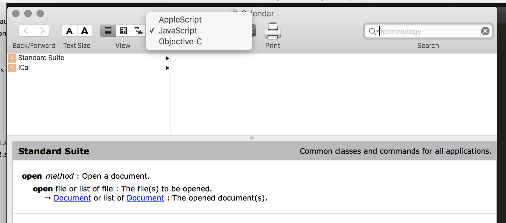
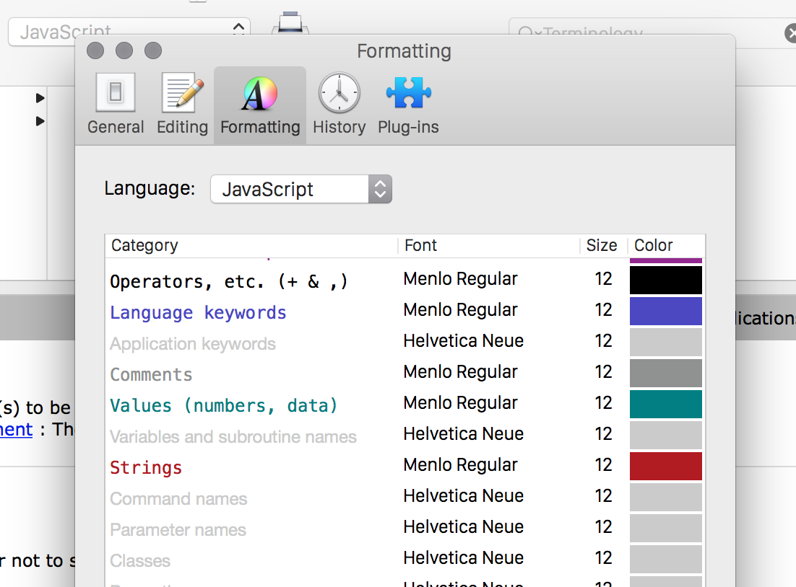
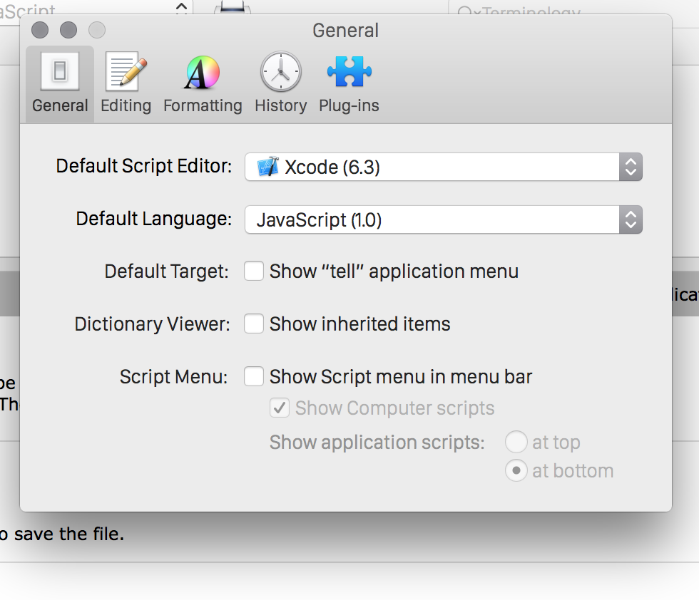

"In JS for OS X parenthesis are only allowed when calling a method if you pass arguments to it. If you use parenthesis with no arguments, you will get a runtime error."
Experiment with the osascript REPL
osascript -l JavaScript -i
JS via Automator Demo
First scripts were done via the 'Automator' creating a 'workflow'
Only way to create 'speech commands' (?)
Confusing Decision: Where to write the code?
In 'Automator' using 'workflow builder'?
In Apple's 'ScriptEditor'?
... anywhere else? Hmm.
Apple says: Use the ScriptEditor

Also:
Syntax highlighting doesn't 'work' one newly written code until you run the app
No tabbed windows FFS
This is dumb let's stop now
Advice on using the ScriptEditor
~ JUST DON'T ~
Exceptions to this rule:
Bundling your code into a standalone .app
Use the Library browser/documentation viewer
Use Node Instead
var osascript = require('osascript');
var osascript = require('osascript');
var fs = require('fs');
// Run JavaScript file through OSA
fs.createReadStream('jxa.js')
.pipe(osascript())
.pipe(process.stdout);